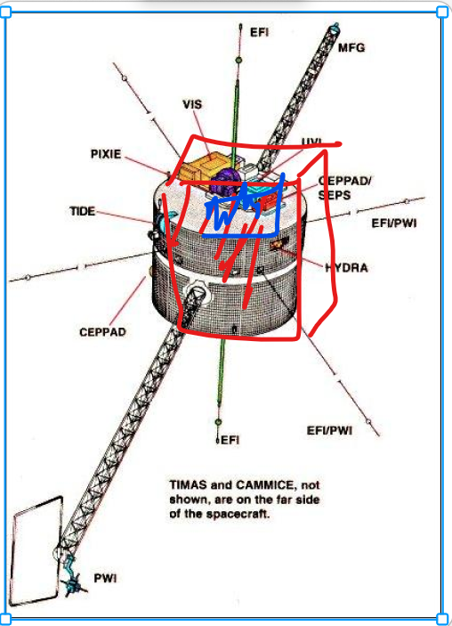

Nature Scanner is a weather-resistant, multi-sensor environmental sensing device developed as a proof-of-concept hardware platform
for drone perception and localization. This device has potential uses in environmental sensing for agricultural applications like scanning
microclimates or monitoring conditions inside storage facilities. I presented my project during Drone day 2025, an academic/industry
UAV workshop hosted by the University of Arizona Agricultural Department in Tucson Arizona.
This device collects temperature, humidity, RGB images and GPS coordinates and stores them locally on an SD card. This suite of environmental
and positional data is key for developing advanced drone perception and localization capabilities. The device consists of two submodules each
controlled by an ESP32-CAM microcontroller development board. Both boards run custom firmware that allows the chips to communicate with sensor
peripherals and can also send data wirelessly between boards. Sensor readings are managed by FreeRTOS,a real time operating system that allows
NS to collect data to be collected continuously and reliably.
The “Josie” module utilizes an OmniVision OV2640 CMOS camera to capture 2 Megapixel (1600 x 1200 UXGA) images set to one frame per second.
It was specifically designed to save these high-quality, uncompressed images directly onto the onboard micro SD card for later retrieval and analysis.
The “Adam” module uses a Sensirion SHT31 solid state temperature/humidity sensor alongside a HiLetgo GY-NEO6MV2 NEO-6M GPS. The NEO6 GPS receives
a satellite signal at L1 band 1575.42 MHz. GPRMC sentences are logged in a text file with UTC time, position status, lat, lon, speed (knots), date and more.
Temperature and relative humidity (at resolution of 0.01 °C/%RH) are also stored in the same text file with a timestamp.

At the highest level, nature scanner consists of two versions of custom firmware that live on two ESP32-cam microcontrollers.
I used Espressifs ESP IDF SDK to adapt prebuilt drivers to initialize and control sensors as well as communicate between dev boards.
FreeRTOS xTaskCreate was used to schedule telemetry, commanding and data flow processes enabling simultaneous management of resources.
Each firmware application follows standard C practices with initialization, task definitions, and entry points in main.c.
Leveraging the ESP-IDF build system, function definitions and prototypes are organized into component folders.
This modular structure enhances maintainability and allows for easier reconfiguration of sensor assignments between the two boards.
The primary motivation for the two-controller architecture stemmed from hardware limitations: GPIO ports required to communicate with
peripherals over I2C/UART conflicted with SD card interface pins when operating in 4-bit SDMMC mode. The ESP32's SD/MMC host peripheral
pins are hardwired to the physical SD card slot, leaving insufficient GPIOs for other components on a single board. Attempting a single-board
design resulted in DMA and write block errors during simultaneous SD card access and peripheral operation.
Communication protocols include I2C for the SHT31 temp sensor and UART for the NEO6M GPS module. The ESP32 interfaces with the OV2640
camera via SPI to read image data, which is subsequently written to the SD card using the SDMMC protocol.
Writing the SHT31 temp sensor driver initially proved challenging. The suggested driver within the framework (i2c.c) was an older,
procedural library focused on sequential I2C operations (create, start, write). Instead, I utilized the ESP-IDF (i2c_master driver),
which is designed around bus/device handles and allows for complete transactions. Utilizing functions like i2c_master_transmit() within
this driver, I successfully implemented commands specified from the Sensirion user manual, such as 'Periodic Data Acquisition Mode',
to continuously retrieve sensor data.
| Category | Component | Description | Approximate Cost (USD) | Purchase |
|---|---|---|---|---|
| microcontroller | ESP32-CAM dev board x2 | dual-core 32-bit LX6 CPU, 2MP OV2640 cam module, microSD slot, wifi, bluetooth | $14.00 | Purchased |
| Sensor | SHT31-DIS-B Sensor | High-precision humidity and temperature sensor, I2C interface | $12.88 | Purchased |
| Ublox NEO-M6 GPS Module | GPS module with 1-2 meter accuracy, EEPROM supports multiple satellite systems | $9.00 | Purchased | |
| Encloser | ABS Plastic IP65 Enclosure | Waterproof, dustproof project enclosure (5.9 x 3.9 x 2.8 inch) | $13.99 | Purchased |
| serial interface | HiLetgo Serial adapter | FT232RL Mini USB to TTL Serial Converter Adapter Module | $6.49 | Purchased |
| memory | SD card | SanDisk 32GB 2-Pack Ultra MicroSDHC UHS-1 Memory Card (2x32GB) | $13.56 | Purchased |
| PCB | PCB | Prototype PCB Solderable Breadboard(5 Pack + 1 Mini Board, Red) | $8.49 | Purchased |
| Power | voltage regulator | AMS1117-3.3V Buck Module LDO 800MA | $0.60 | Purchased |
| voltage regulator | 5v Regulator Module Mini Voltage Reducer DC 4.5-24V 12V 24V to 5V 3A | $1.10 | Purchased | |
| battery | 7.4V LiPo Battery 600mAh 2S 30C Rechargeable Lithium Polymer Batteries | $17.00 | Purchased |
| Category | Tool | Purpose / Notes |
|---|---|---|
| Framework | ESP-IDF | Espressif IoT Dev Framework for ESP32-CAM |
| CMake, Ninja | Build system tools used by ESP-IDF | |
menuconfig |
ESP-IDF tool for project configuration | |
| RTOS | FreeRTOS | Real-Time Operating System (integrated in ESP-IDF) |
| Language | C | Primary firmware development language |
| Compiler | Xtensa GCC Toolchain | C/C++ compiler for ESP32 Xtensa core |
| IDE | Visual Studio Code (VS Code) | Integrated Development Environment |
| ESP-IDF VS Code Extension | Integrates ESP-IDF build, flash, debug in VS Code |